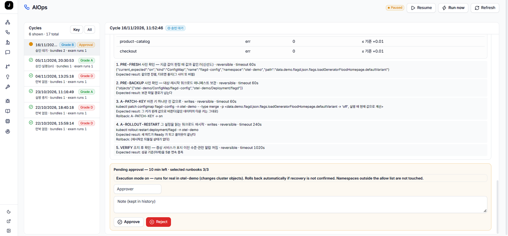

1. 하나의 기반 — Observability
자율 운영이라는 큰 그림은 튼튼한 기술적 토대 없이는 세울 수 없다. JuneAI에서 그 토대는 Observability(관측·계측)이다. 운영 중인 시스템이 남기는 메트릭·추적·프로파일을, 독자적인 계측으로 레거시 안까지 빠짐없이 모은다.
그리고 이 하나의 기반 위에서 두 갈래가 함께 올라간다.
- 기술 온톨로지 — IT 시스템의 지연·병목·장애를 사람 대신 AIOps가 감지·분석·조치한다.
- 업무·산업별 온톨로지 — 같은 관측 기반 위에서, 업무와 산업에 맞는 온톨로지를 구성한다.
둘은 위아래로 쌓이는 단계가 아니라, 동일한 Observability 기반을 공유하는 두 갈래이다. 기반이 하나이기에, IT 운영이든 업무 운영이든 같은 방식으로 문제를 보고 해결한다.
JuneAI의 구조
기반 — Observability(관측·계측)
그 위에 → AIOps(IT 자율 운영) · 업무·산업별 온톨로지(비즈니스 자율 운영)
그리고 모든 판단·조치는 하네스로 튜닝한 에이전트가 수행한다.
믿을 수 있는 AIOps — 기술 온톨로지는 곧 AIOps
그 한 갈래인 AIOps는 세 가지를 갖춘다. 기술 온톨로지는 곧 AIOps이다.
- 신뢰성(Reliable) — 결과를 믿을 수 있다.
- 안정성(Stable) — 운영 환경에서 흔들리지 않는다.
- 근본 원인 분석(Root-Cause) — 증상이 아니라 진짜 원인을 찾아낸다.
이 세 가지가 갖춰져야 비로소 IT 운영을 자동화할 수 있다. "원인은 모르지만 일단 재시작"이 아니라, 왜 그런지 설명할 수 있는 자동화이다.
2. 프로세스와 문맥이 끊어지지 않는다
복잡한 IT 환경에서 가장 흔한 실패는 흐름이 중간에 끊기는 것이다. 추적이 레거시 앞에서 멈추거나, 시스템 경계에서 데이터가 사라지면 — 전체 그림을 잃고 원인도 놓친다.
문제를 이해하려면 흐름을 이어 가고, 앞뒤의 문맥을 전달해야 한다. 그런데 그 흐름이 중간에 갑자기 끊어지면, 무슨 일이 왜 일어났는지 이해하기가 쉽지 않다. 전후 문맥을 잇고, 끊어진 곳을 다시 연결하고, 비어 있는 문맥을 채워 넣는 일 — 바로 이것을 해내는 것이 계측(Instrumentation)이다.
🔗 JuneAI는 계측에 강하다. 끊긴 추적을 잇고, 전후 문맥을 연결하고, 비어 있는 자리를 채워 — 흐름이 중간에 사라지지 않도록 한다.
JuneAI에서는 프로세스가 중단되거나 끊어지지 않는다.
- 레거시를 포함한 시스템 내부의 처리 과정까지 이해한다.
- 독자적인 Observability(관측) 기술로 복잡한 IT 문제를 끝까지 추적해 해결한다.
화면(프론트엔드)에서 출발한 하나의 요청이 백엔드를 지나 레거시 깊숙한 처리 단계에 이르기까지, 끊김 없이 한 줄기로 이어진 지도를 그린다. 그래서 "어디서 느려졌는지, 어디서 틀어졌는지"를 정확히 짚어 낸다.


3. 핵심은 "독자적 계측" — 재시작도, 코드 변경도 없이
JuneAI를 떠받치는 가장 핵심적인 기술은 독자적인 계측(Instrumentation)이다. 운영을 멈추지 않고도, 애플리케이션 코드를 고치지 않고도, 재시작 없이 — 필요한 지점에 언제든 관측·추적 지점을 적용한다. 평소에는 가볍게 돌다가, 문제가 의심되는 바로 그 지점에 즉시 "렌즈"를 들이대는 방식이다.
- ✅ 코드 변경 불필요 — 애플리케이션 코드를 고치지 않는다.
- ✅ 재시작 불필요 — 시스템을 다시 띄울 필요가 없다.
- ✅ 운영 중단 불필요 — 서비스를 멈추지 않고 그대로 들여다본다.
- ✅ 언제든, 어디든 — 운영 중에도 원하는 지점에 관측을 더하거나 거둔다.
계측이 만드는 결과 — 라이브 디버깅
이 독자적 계측이 있기에 라이브 디버깅(Live Debugging)이 가능하다. 운영 중인 애플리케이션을 실시간으로 디버깅하는 것이다. 보통은 시스템을 멈추거나, 테스트 환경을 따로 만들거나, 특별한 로그를 심어 재배포해야 하지만 — 그 모두가 시간과 위험을 부른다.
JuneAI는 다르다. 계측도, 디버깅도 — 재시작과 코드 변경이 전혀 필요 없다. 운영 환경의 문제를 그 자리에서 곧바로 식별하고 해결한다.
💡 왜 중요한가 — 운영 환경에서만 재현되는 문제, 어쩌다 한 번 터지는 문제는 전통적인 방법으로는 잡기 매우 어렵다. 독자적 계측과 라이브 디버깅은 문제가 실제로 일어나는 바로 그 순간, 그 자리에서 원인을 포착한다 — 운영을 단 한 순간도 멈추지 않고.


✅ 언제든, 어디든 — 운영 중에도 원하는 지점에 관측을 더하거나 거둔다.
4. 오픈소스 모델로도 높은 정확도를 — "하네스 엔지니어링"
뛰어난 AIOps는 두 기둥 위에 선다. 하나는 앞서 본 독자적인 Observability와 계측 — 레거시 내부까지 끊김 없이 들여다보는 "눈"이다. 다른 하나는 그렇게 모은 신호를 정확한 판단과 조치로 바꾸는 에이전트이고, 이 에이전트를 떠받치는 것이 바로 하네스 엔지니어링(Harness Engineering)이다.
아무리 관측을 잘해도, 그 신호를 받아 판단하는 AI가 흔들리면 자동화는 믿을 수 없다. JuneAI는 비싼 프론티어 모델에 기대는 대신, 하네스 엔지니어링으로 에이전트를 튜닝해 — 가벼운 오픈소스 모델에서도 높은 정확도를 낸다.
하네스란?
하네스는 AI 모델을 감싸는 "운영 틀"이다. 모델에게 어떤 맥락을 어떤 순서로 주고, 어떤 도구를 쓰게 하고, 결과를 어떻게 검증·보정할지를 설계하는 엔지니어링 전체를 말한다. 같은 모델이라도 하네스가 뛰어나면 결과의 정확도·신뢰성·속도가 완전히 달라진다.
비싼 프론티어 모델이 아니라, 저렴한 오픈소스 모델로
JuneAI는 고가의 프론티어 모델 대신 저렴한 오픈소스 모델로 에이전트를 구성한다. 그럼에도 프론티어 모델에 비해 결코 뒤처지지 않는 정확도와 신뢰성을 제공한다. 온프레미스로 구동할 수 있어 비용과 보안 모두에 유리하다. 비결이 바로 하네스 엔지니어링이다.
- 💰 낮은 비용 — 비싼 모델 사용료 없이 AIOps 에이전트를 운영한다.
- ⚡ 빠른 응답 — 응답 속도를 끌어올려 조치까지의 시간을 줄인다.
- 🔒 안정적 정확도 — 모델이 바뀌어도 하네스가 품질을 떠받친다.
경쟁사와의 근본적인 차이
대부분의 경쟁 제품은 프론티어 모델에 의존한다. 결과를 개선하는 방법이 곧 "더 좋은 모델이 나오기를 기다리는 것"이라, 품질의 향상이 모델의 발전 속도에 매여 있다.
JuneAI는 처음 설계 단계부터 모델에 의존하기보다 하네스를 향상시키는 데 역량을 집중했다. 모델은 갈아 끼울 수 있는 부품이고, 진짜 경쟁력은 그 부품을 다루는 하네스에 있다는 철학이다.
추적(Tracing)으로 하네스를 들여다본다
AIOps의 Observability는 시스템만이 아니라 에이전트 자신에게도 향한다. JuneAI는 분산 추적을 활용해 하네스가 동작하는 과정 하나하나를 분석한다. AI가 어떤 맥락을 받아, 어떤 판단을 거쳐, 어떤 조치에 이르렀는지를 추적으로 투명하게 들여다보며 하네스를 계속 개선한다. "블랙박스 AI"가 아니라 관찰하고 검증할 수 있는 AI이다.



5. 정리 — 하나의 기반 위에, 하네스 에이전트로
- 기반은 Observability — 관측·계측이 토대이다. 그 위에 AIOps와 업무·산업별 온톨로지가 같은 방식으로 올라간다.
- 독자적 계측이 핵심 — 재시작·코드 변경 없이 운영 중 어디든 관측을 적용한다. 라이브 디버깅은 그 계측이 만든 결과이다 — 계측도 디버깅도 멈춤 없이.
- 끊기지 않는 프로세스 — 레거시를 포함한 내부 처리까지, 독자적 Observability로 한 줄기로 추적한다.
- 하네스 엔지니어링으로 완성한 에이전트 — 저렴한 오픈소스 모델로도 프론티어급 정확도를 내고, IT를 넘어 비즈니스 레벨의 자율 운영까지 수행한다.
- 믿을 수 있는 AIOps — 신뢰성·안정성·근본 원인 분석으로, "원인 모를 재시작"이 아니라 설명 가능한 자동화를 한다.
JuneAI의 주춧돌은 Observability이다. 기반이 하나이기에 그 위의 AIOps도, 업무·산업별 온톨로지도 흔들림 없이 올라가고 — 그 모든 판단과 조치를 하네스로 튜닝한 에이전트가 완성한다.